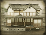

Basic Unit Statistics (can be modified by difficulty level, arts, skills, traits and retainers)
| Recruitment Cost | 1420 | |
| Upkeep Cost | 180 | |
| Melee Attack | 15 | 42% |
| Charge Bonus | 20 | 40% |
| Bonus vs Cavalry | 0 | 0% |
| Range | 50 | 7% |
| Accuracy | 40 | 40% |
| Reloading Skill | 60 | 60% |
| Ammunition | 2 | 2% |
| Melee Defence | 8 | 22% |
| Armour | 4 | 26% |
| Morale | 12 | 24% |
Strengths & Weaknesses
- Can hide anywhere.
- Can move hidden.
- Very good in melee.
- Good but short-ranged melee attack.
- Good morale.
- Weak against cavalry.
Abilities
- Stealth - This unit can become extremely stealthy for a short period of time, remaining hidden even when running.
- Blinding Grenades - This unit can use blinding grenades to disorientate the enemy, affecting their speed, combat ability and missile accuracy.
Requires
- Buildings: 
Description
Death hides in the rustling of leaves.
These men are shadows, able to move across the battlefield without being seen. They are best employed to stealthily approach high-value enemy units, and then suddenly strike. They can throw fire bombs at close range, and fight in melee with deadly skill. However, the small number of men in a kisho ninja unit means that they can be overwhelmed by numbers in close combat if badly handled. They should not be hurled into an attack just because they are at hand! Despite more than two centuries of relative peace and calm under the Tokugawa Shogunate, there are few reasons to think that the ninja ceased to exist. Indeed, there is every reason to suppose that ninja remained in use throughout the period to keep order. The arrival of new weapons and technology in Japan in the 1850s and later would merely have given the ninja new killing devices to use. During the wars of the 20th Century, Imperial Japanese Special Forces employed many skills that would have been instantly recognisable to medieval ninja.